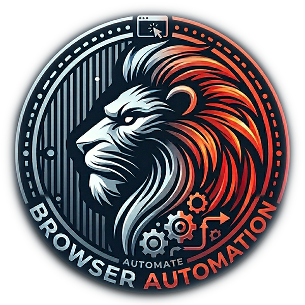

Current Recording
No recording in progress.
Detection Log 0 items
Shows the HTML elements the recorder is detecting, with a compact visual view.
Browser Automation Extension

Shows the HTML elements the recorder is detecting, with a compact visual view.
This is an experimental project for developmental purposes and is a personal project. Use with caution. No responsibility or liability is accepted for damage caused by using this tool.